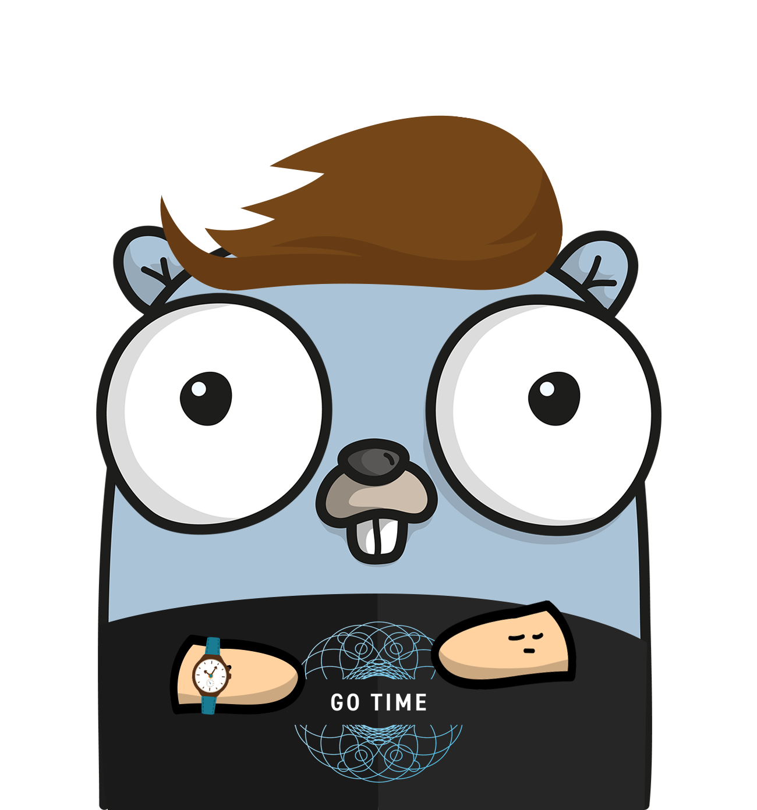

Go Code for SQL DAL Generation
James Culbertson, Houston Golang Meetup, October 18, 2018
Using Go Modules
With an Intro to Athens
James Culbertson
Houston Golang Meetup
June 20, 2019

History of Packages in Go
GOPATH
Available in Go 1.0
No Way to Pin Versions
Vendoring Added in Go 1.5
Q and A
Slides:
https://bit.ly/2QqUI0m
Using Go Modules:
https://blog.golang.org/using-go-modules
The Athens Project:
https://docs.gomods.io/